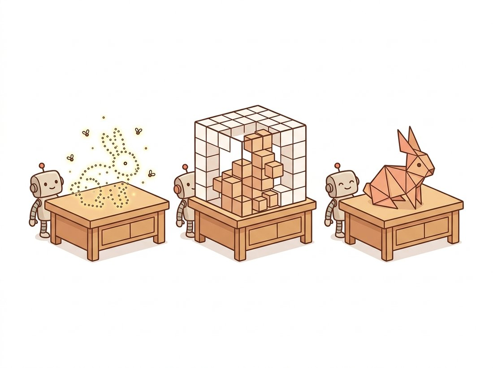

"A point cloud is a swarm of fireflies that agree on nothing. A voxel grid is a city of identical apartment blocks, most of them empty. A mesh is origami that took a graphics PhD to fold. Pick your poison; the geometry is the same."
A Data Structure That Has Stored the Same Bunny a Thousand Ways
There are three explicit ways to write down 3D geometry, and the choice among them is a choice about which operations are cheap and which are catastrophic. A point cloud is an unordered list of 3D coordinates: trivially produced by any depth sensor, but with no surface and no neighbor structure. A voxel grid is a 3D pixel array: regular and convolution-friendly, but its memory grows as the cube of resolution. A mesh is a set of vertices joined by triangles: compact, the native language of rendering, but awkward to produce and to learn. This section explains the trade-offs precisely, shows how each stores the same scene, and walks through the single most useful conversion in applied 3D vision: lifting the depth map of Section 27.1 into a colored point cloud using the camera intrinsics of Chapter 12.
Section 27.1 ended with a depth map, a 2D array of distances. That is fine for visualization, but it is still tied to the image plane: you cannot rotate it, measure a volume, or register it against another capture. To do real 3D work you must lift the geometry into a representation that lives in actual three-dimensional space. This section surveys the three explicit choices, the structures that store geometry as concrete numbers rather than as a neural network (which we reach in Section 27.4). Each makes a different bet, and understanding the bets is essential before we ask a network to learn on them in Section 27.3.
1. Point Clouds: Geometry as an Unordered Set Beginner
A point cloud is the simplest 3D representation: a set of points, each an $(x, y, z)$ coordinate, optionally carrying attributes such as color $(r, g, b)$ or a surface normal. It is what every depth sensor, LiDAR scanner, RGB-D camera, or stereo rig produces natively, so it is the raw material of applied 3D vision. Its virtues are directness and density control: you can have a thousand points or a billion, sampled wherever you have measurements, with no wasted storage on empty space.
Its defining property, and the source of every difficulty in Section 27.3, is that it is an unordered set with no connectivity. There is no canonical first point, no grid of neighbors, no notion of which points form a surface. Two point clouds that list the same points in different orders are the same cloud. This permutation invariance is geometrically honest but architecturally hostile: the convolution of Chapter 19 relies on a fixed grid of neighbors, which a point cloud simply does not have. We will spend the next section solving exactly this problem.
2. Voxels: Geometry on a 3D Grid Beginner
A voxel grid is the 3D generalization of a pixel image: space is diced into a regular array of cubic cells, and each cell stores an occupancy bit, a density, or a feature vector. Its great appeal is regularity. Because it is a grid, the 2D convolution generalizes immediately to a 3D convolution (exactly the spatiotemporal kernel of Chapter 26, now over space rather than space-time), so the entire CNN toolkit transfers without modification. Early deep 3D learning (VoxNet, 3D ShapeNets) lived here for precisely this reason.
The fatal weakness is memory. A voxel grid at resolution $N$ has $N^3$ cells, so doubling the resolution multiplies storage and compute by eight. A $512^3$ grid is 134 million cells, most of them empty, because real surfaces are two-dimensional sheets floating in a three-dimensional volume. This cubic curse is why dense voxels rarely exceed $128^3$ in practice and why the field largely moved to sparse representations (octrees, hash grids, the sparse convolutions of MinkowskiEngine) that store only the occupied cells. Figure 27.2.1 contrasts the three representations and makes the memory trade-off visible.
3. Meshes: Geometry as Connected Surface Intermediate
A triangle mesh stores geometry as a list of vertices (3D points) plus a list of faces (triples of vertex indices that form triangles). This is the native representation of computer graphics: every game, film, and computer-aided design (CAD) model is a mesh, and GPUs rasterize triangles in hardware. A mesh is compact (a smooth surface needs few triangles where it is flat and many where it is detailed) and, crucially, it represents the surface explicitly, so you can compute areas, volumes, and watertight boundaries that a point cloud cannot express.
The cost is structural complexity. A mesh has irregular connectivity (each vertex belongs to a variable number of triangles), and generating a good mesh from raw points (surface reconstruction) is a hard problem with its own literature: Poisson reconstruction, marching cubes, ball pivoting, and the modern neural variants. Editing a mesh while keeping it valid (no holes, no self-intersections, consistent winding) is delicate, which is why most learning systems predict points or voxels and convert to a mesh only at the very end. The conversions among the three form a small ecosystem, summarized in Table 27.2.1. The illustration below shows the same shape built all three ways at once.

| Property | Point Cloud | Voxel Grid | Mesh |
|---|---|---|---|
| Structure | Unordered set | Regular 3D grid | Vertices + faces |
| Memory at resolution N | O(points) | O(N³) | O(surface area) |
| Convolution applies? | No (needs PointNet) | Yes (3D conv) | No (needs graph nets) |
| Represents surface? | No | Implicitly | Yes, explicitly |
| Sensor-native? | Yes (LiDAR, RGB-D) | No | No |
| Render-ready? | Splat only | Volume render | Yes (GPU raster) |
The representation is dictated by the operation you need most. Registering two LiDAR scans? Stay in point clouds, where iterative closest point (ICP) works directly. Running a 3D CNN for occupancy prediction? Use voxels (or sparse voxels) so convolution applies. Shipping an asset to a game engine or measuring a volume? You need a mesh. Real pipelines convert freely: sensor produces points, a network voxelizes them to reason, and the final output is reconstructed as a mesh. Fluency means knowing which conversion costs what, not pledging loyalty to one structure.
The cubic curse has an oddly philosophical flavor: a $512^3$ voxel grid holds 134 million cells, yet a real object is a two-dimensional skin draped over emptiness, so the overwhelming majority of those cells store the answer to a question nobody asked, namely "is there anything here?" No. Voxels spend almost all their effort certifying the absence of geometry. Sparse representations are simply the field agreeing to stop paying rent on empty space.
4. Lifting a Depth Map to a Point Cloud Intermediate
The single most useful conversion in this chapter is the inverse of the projection from Chapter 12. A depth map gives, for each pixel $(u, v)$, the distance $z$ to the surface. The pinhole equations forward-projected 3D to 2D; with $z$ known we run them backward to recover the 3D point:
This is called back-projection or unprojection. Run it over every pixel and you turn an $H \times W$ depth map into a point cloud of up to $H \times W$ points, one per pixel, each colored by the corresponding RGB value. The code below does exactly this with vectorized NumPy, the bridge from the depth output of Section 27.1 to a genuine 3D structure.
# Lift a depth map into a colored 3D point cloud by inverting the pinhole
# projection: each valid pixel and its depth back-project to one (x, y, z)
# point carrying the pixel's RGB color. The vectorized NumPy runs over all pixels.
import numpy as np
def depth_to_pointcloud(depth, rgb, fx, fy, cx, cy):
"""depth: (H,W) metric depth. rgb: (H,W,3). Returns (N,3) points, (N,3) colors."""
H, W = depth.shape
u, v = np.meshgrid(np.arange(W), np.arange(H)) # pixel coordinate grids
z = depth.reshape(-1)
valid = z > 0 # drop pixels with no depth
u, v = u.reshape(-1)[valid], v.reshape(-1)[valid]
z = z[valid]
x = (u - cx) * z / fx # back-project: invert the pinhole
y = (v - cy) * z / fy
points = np.stack([x, y, z], axis=1) # (N, 3)
colors = rgb.reshape(-1, 3)[valid] / 255.0 # match colors to surviving points
return points, colors
# Example with a synthetic intrinsics matrix (fx=fy=525 is a common RGB-D default).
depth = np.full((480, 640), 2.0, np.float32) # a flat wall 2 m away
rgb = np.zeros((480, 640, 3), np.uint8)
pts, cols = depth_to_pointcloud(depth, rgb, fx=525, fy=525, cx=320, cy=240)
print("points:", pts.shape, " z range:", pts[:, 2].min(), pts[:, 2].max())
# points: (307200, 3) z range: 2.0 2.0(u - cx) * z / fx lines are the inverted pinhole projection; every valid pixel becomes one 3D point carrying its original color. A flat 2-meter wall correctly yields points all at z = 2.Who: a robotics team building a bin-picking arm for a fulfillment warehouse, 2022. Situation: a wrist-mounted RGB-D camera produced point clouds of cluttered bins, and the team needed to detect graspable surfaces. Problem: their first system voxelized every cloud into a $256^3$ grid to run a 3D CNN, and inference took 400 milliseconds and 11 gigabytes of GPU memory per frame, far too slow and too large for the per-pick budget, because the grid was 99 percent empty air. Decision: they dropped dense voxels and kept the data as a point cloud, running a PointNet-style network (the subject of Section 27.3) directly on the raw points, with sparse voxel features only where points existed. Result: inference fell to 30 milliseconds and well under a gigabyte, and the cubic memory wall of subsection 2 vanished because empty space cost nothing. Lesson: dense voxels are seductive because convolution just works, but for the sparse 2D surfaces that real sensors capture, the cubic curse makes them the wrong default; match the representation to the data's sparsity.
The hand-written back-projection above is good for understanding, but Open3D bundles unprojection, visualization, normal estimation, and surface reconstruction into a few well-tested calls. Creating a point cloud from RGB-D and meshing it drops from roughly 60 lines of NumPy and marching-cubes code to this:
import open3d as o3d
# Open3D version of the lift above plus surface reconstruction: build an RGB-D
# image, unproject it with the camera intrinsics, estimate normals, and run
# Poisson reconstruction to get a mesh, all in a handful of tested calls.
rgbd = o3d.geometry.RGBDImage.create_from_color_and_depth(color, depth_o3d)
intr = o3d.camera.PinholeCameraIntrinsic(640, 480, 525, 525, 320, 240)
pcd = o3d.geometry.PointCloud.create_from_rgbd_image(rgbd, intr) # the lift
pcd.estimate_normals() # needed for meshing
mesh, _ = o3d.geometry.TriangleMesh.create_from_point_cloud_poisson(pcd, depth=9)
o3d.visualization.draw_geometries([pcd]) # interactive 3D viewercreate_from_rgbd_image does the unprojection of Code Fragment 1, while estimate_normals and create_from_point_cloud_poisson add the normal estimation and Poisson surface reconstruction that turning points into a mesh requires.Open3D handles the intrinsics bookkeeping, the normal estimation that Poisson reconstruction requires, and the full point-to-mesh conversion of subsection 3, plus an interactive viewer. It is the library shortcut behind nearly all explicit-geometry work in this chapter, and it interoperates with the PyTorch3D tensors used in Section 27.3.
The clean three-way split of this section is being eroded by a fourth option: implicit representations that store a surface as the zero level-set of a learned function, the signed distance field (SDF) or occupancy field. DeepSDF (2019) and the neural-implicit family represent a shape as a network $f(x, y, z) \to$ distance-to-surface, combining the compactness of a mesh with the smoothness and learnability of a continuous function, and you extract a mesh on demand with marching cubes. This is the direct conceptual cousin of the NeRF density field in Section 27.4. The 2024-2026 frontier fuses these: methods like 2D Gaussian Splatting and SuGaR recover clean meshes from the splat representation of Section 27.5, and feed-forward models such as VGGT (2025) and the large reconstruction models predict point maps or implicit fields directly from images, collapsing the capture-and-convert pipeline into a single forward pass. The boundary between "explicit" and "neural" geometry, sharp in this section, is exactly what the rest of the chapter dissolves.
We now have geometry in an explicit 3D structure. The point cloud, in particular, is sensor-native and ubiquitous, but its unordered, grid-free nature means we cannot run a convolution on it. Building a network that can consume a raw point cloud is the problem we solve next, in Section 27.3.
A voxel grid stores one 4-byte float per cell. Compute the memory required for a dense grid at resolutions $32^3$, $128^3$, $256^3$, and $512^3$. Then suppose the surface you are representing occupies only the cells within one voxel of a sphere of radius $0.4N$; estimate the fraction of cells that are actually on the surface at each resolution. Write a short paragraph explaining, with these numbers, why the field moved to sparse voxel representations and how that connects to the warehouse-robot story in subsection 4.
Take the depth map you produced from a foundation model in Exercise 27.1.2 (or any RGB-D capture). Using the depth_to_pointcloud function of subsection 4 with reasonable intrinsics ($f_x = f_y = 0.9 \times \text{width}$, $c_x, c_y$ at the image center), back-project it into a colored point cloud and save it as a .ply file with Open3D. Open it in a viewer and rotate it. Then deliberately use intrinsics that are too large by 50 percent and re-lift; describe how the cloud's shape distorts, and connect the distortion to the role of $f_x$ in the back-projection equations.
For each of the following tasks, state which of the three representations (point cloud, voxel grid, mesh) you would use as the primary working structure and justify the choice in one sentence using Table 27.2.1: (a) computing the watertight volume of a scanned mechanical part; (b) aligning two overlapping LiDAR scans of a building; (c) running a 3D convolutional occupancy predictor on a small object; (d) shipping a captured statue into a video game. Then identify one task where you would need to convert between two representations and name the conversion direction.